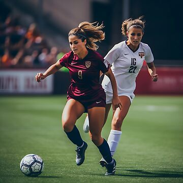

FUTBOL FEMENINO
El fútbol femenino es una modalidad deportiva en la que juegan mujeres en equipos de 11, con el objetivo de marcar goles en la portería contraria. Se juega en un campo de césped, siguiendo reglas similares al fútbol masculino.

MEJORES GOLES DEL FUTBOL FEMENINO
El fútbol femenino nos ha brindado goles espectaculares que han quedado en la memoria de los aficionados. A continuación, te presento algunos de los más destacados:
1. Gol de Mónica Ocampo (México) en el Mundial 2011: En el partido inaugural contra Inglaterra, Ocampo anotó desde fuera del área con un potente disparo que se coló en la escuadra, siendo elegido posteriormente como el mejor gol en la historia de los Mundiales Femeninos según una encuesta de la FIFA.
2. Gol de Carli Lloyd (EE.UU.) en la final del Mundial 2015: Lloyd sorprendió al mundo al marcar desde el mediocampo contra Japón, aprovechando que la portera estaba adelantada. Este gol contribuyó a su 'hat-trick' en la final y fue galardonado como el Gol del Torneo.
3. Gol de Abby Wambach (EE.UU.) contra Brasil en 2011: En los cuartos de final, Wambach empató el partido con un cabezazo en el último minuto de la prórroga, llevando el encuentro a penales y eventual victoria para EE.UU. Este gol fue elegido como el mejor en la historia de los Mundiales Femeninos en una encuesta de la FIFA en 2015.
4. Gol de Marta Vieira da Silva (Brasil) en el Mundial 2007: Marta deslumbró en las semifinales contra EE.UU. al anotar un gol tras una jugada individual, dejando atrás a varias defensoras y definiendo con precisión. Este gol fue reconocido como el Gol del Torneo en 2007.
5. Gol de Ingrid Johansson (Suecia) en el Mundial 1991: Desde unos 35 metros, Johansson lanzó un disparo imparable que se convirtió en uno de los primeros grandes goles en la historia de los Mundiales Femeninos.
FUTBOL FEMENINO EN HONDURAS
La selección femenina de fútbol de Honduras es el equipo representativo del país en las competiciones oficiales de fútbol femenino. Su organización está a cargo de la Federación Nacional Autónoma de Fútbol de Honduras, la cual es miembro de la Concacaf.
Historia De Honduras En El Futbol Femenino
Los mayores éxitos de Honduras a nivel femenino han llegado en la categoría Sub-20 en la que ha logrado clasificarse a dos pre mundiales. En el 2014 clasificaron por primera vez a una competencia femenina en CONCACAF, luego de clasificar líder de la eliminatoria con 7 puntos por encima de Guatemala, El Salvador y Belice. Ya en el pre mundial, perdió en su partido de debut 0-2 ante Trinidad y Tobago, luego volvió a perder pero esta vez por una horrorosa goleada de 10-1 ante México, anotando el único gol hondureño Seidy Cruz, primero en competencias de CONCACAF. En su último partido, Honduras consiguió un histórico triunfo de 3-0 ante las anfitrionas las Islas Caimán, anotando Linda Fonseca en dos ocasiones y Johana López Rivera. Lastimosamente, Honduras quedó tercera del grupo, eliminada de la competencia pero feliz por la clasificación a una competencia femenina de CONCACAF. Su segundo éxito fue el siguiente año, también con la selección Sub-20. Esta vez Honduras era anfitriona del certamen.